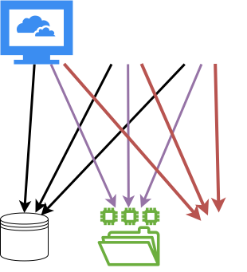
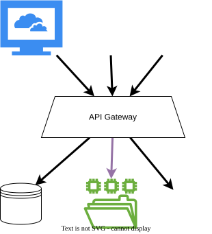
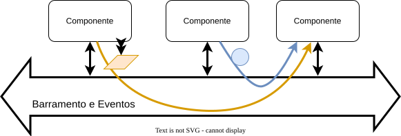
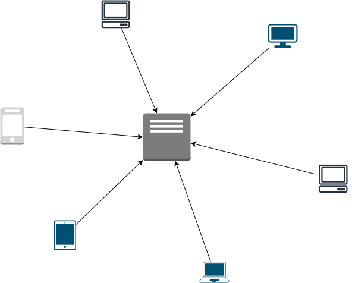
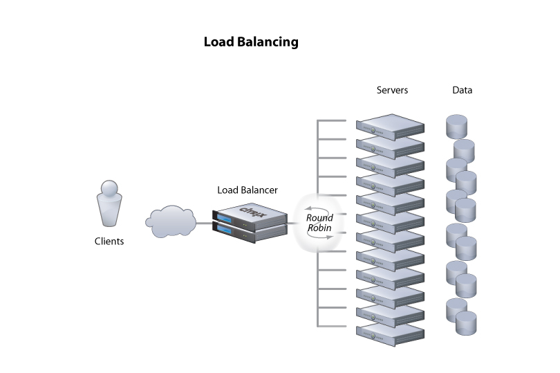
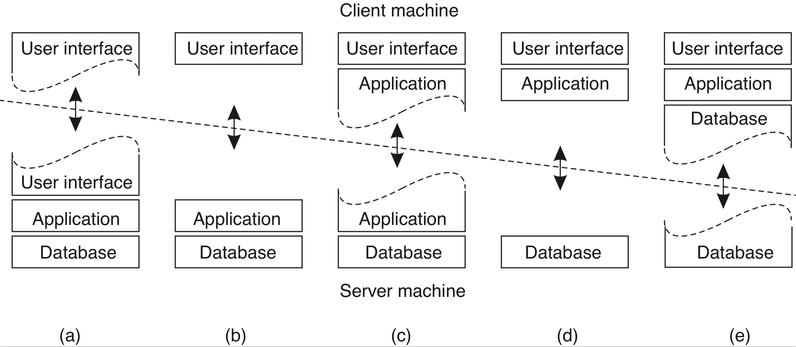
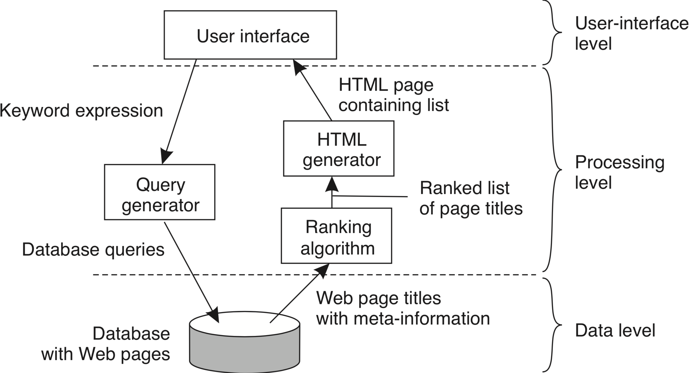
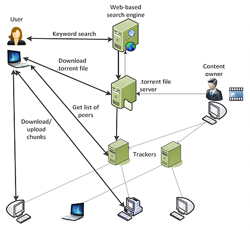
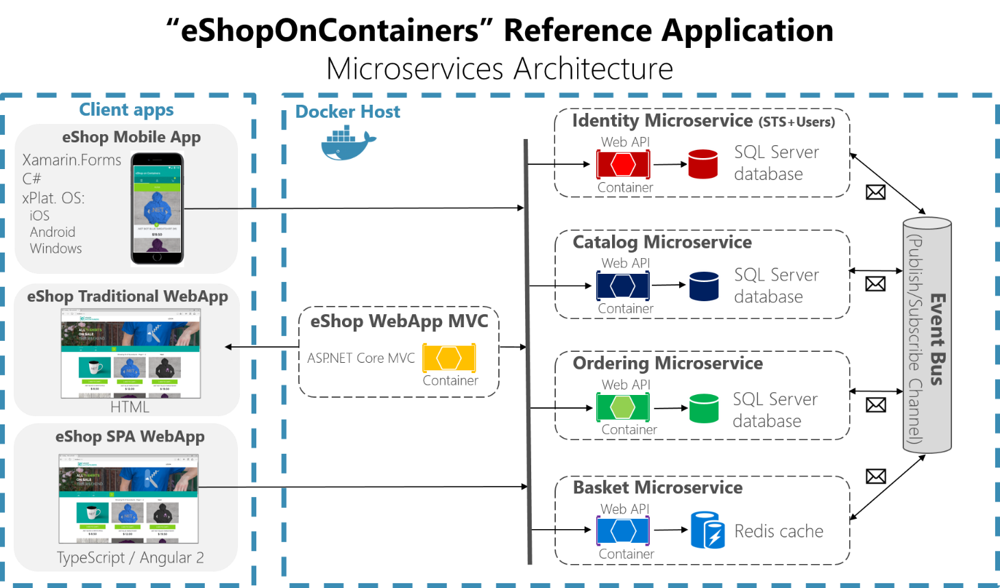

Arquiteturas
De acordo com David Garlan and Mary Shaw, January 1994, CMU-CS-94-166, em An Introduction to Software Architecture
... an architectural style determines the vocabulary of components and connectors that can be used in instances of that style, together with a set of constraints on how they can be combined. These can include topological constraints on architectural descriptions (e.g., no cycles). Other constraints—say, having to do with execution semantics—might also be part of the style definition.
Em outras palavras, um estilo ou padrão arquitetural é o conjunto de princípios que provê uma infraestrutura abstrata para uma família de sistemas, e promove o reuso de projeto ao prover soluções para problemas recorrentes e frequentes ao definir quais os componentes presentes no sistema e como estes interagem uns com os outros, por meio de conectores, para implementar a solução para um problema.
Componentes e Conectores
Para se alcançar eficiência no desenvolvimento de sistemas, é imperativo que se pare de reinventar a roda a cada iteração e, em vez disso, se reuse artefatos existentes, providos pela linguagem sendo usada, por frameworks de terceiros e por interações anteriores da equipe. De fato, o desenvolvimento de novos sistemas deveria ser pautado pela criação de componentes simples e coesos, que possam ser operados independentemente e que por meio de interfaces bem especificadas completas, possam ser então conectados para resolver um problema maior.
Uma vez selecionados, os componentes são conectados por meio de conectores, que podem assumir múltiplas formas para esconder as complexas interações entre os componentes, por exemplo, por meio de fluxos de mensagens ou invocações remotas de procedimentos.
Componentes bem projetados, deveriam ser facilmente substituídos por outros que respeitem a conexão. Isto aumenta a manutenibilidade dos sistemas e pode simplificar passos como a replicação de componentes.
Alguns conectores são complexos o suficiente para serem considerados eles próprios componentes, mas no contexto desta discussão, a bem da abstração, os consideraremos apenas como conectores. Por exemplo, um broker MQTT usado para a comunicação entre dois processos é considerado um conector, e não um componente.
Dependendo de como são conectados, haverá maior ou menor dependência entre os componentes. Quando houver forte dependência, diremos que os componentes estão fortemente acoplados (tightly coupled). Caso contrário, diremos que estão fracamente acoplados (loosely coupled). A razão óbvia para preferir sistemas fracamente conectados é sua capacidade de tolerar disrupções; se um componente depende pouco de outro, então não se incomodará com sua ausência por causa de algum problema.
Considere por exemplo o sistema na figura a seguir. Cada aplicação cliente (App X) conversa com cada SGBD, sistema de arquivos e outros serviços, i.e., com o backend, usando uma API diferente no cenário do lado esquerdo; ou seja, cada aplicação precisa conhecer cada uma das API e uma troca em um dos serviços do backend exige ajustes em todas as aplicações.
Sem API gateway

Todo cliente precisa conhecer todas as API. Todos devem ser modificados com cada novo serviço.
Com API gateway

Todo cliente conhece apenas uma API. Apenas o gateway precisa ser modificado com cada novo serviço.
Já no lado direito, um conector foi colocado entre as aplicações e o backend, oferecendo uma interface única para todos os clientes. A responsabilidade de conhecer as API específicas dos componentes do backend passa a ser então do conector, e quaisquer mudanças nos serviços implicam mudanças apenas no conector, não nos clientes.
Certos conectores permitem um acoplamento tão fraco entre componentes, que estes não precisam se conhecer ou sequer estar ativos no mesmo momento.
Barramento de eventos

Mensagens são enviadas entre processos, via o barramento.
Espaço de tuplas

Dados são armazenados no e recuperados do espaço de tuplas.
Também há a questão da simplificação de API, uma vez que conector pode impor um padrão a ser seguido por todos os componentes e minimizar as API usadas. Por exemplo, um espaço de tuplas poderia impor uma API CRUD para manipulação de entradas do tipo chave/valor.
Cliente/Servidor
A forma como os componentes se comunicam, isto é, como os conectores são usados é importante no estudo arquitetural. Mas também são importantes os papéis assumidos pelos componentes na realização de tarefas. Neste sentido, provavelmente a arquitetura de computação distribuída mais comum é a Cliente/Servidor.
Na arquitetura Cliente/Servidor, como implicado pelo nome, há um processo que serve a pedidos realizados por outros processos. Isto é feito quando o cliente contacta o servidor e requer (request) a realização do serviço. O servidor, por sua vez, pode desempenhar tarefas como fazer cálculos, armazenar dados, ou repassar uma mensagem e, ao final da realização da tarefa, responder (response) ao cliente.
Esta arquitetura forma a base da computação distribuída, sobre a qual todos os outros modelos são implementados, sendo uma das razões histórica: os primeiros sistemas a permitirem a operação por múltiplos usuários, ainda na década de 60, eram compostos de um host robusto ao qual se conectavam diversos terminais, essencialmente com teclado e monitor, isto é, um servidor e vários clientes. Com a redução dos computadores, surgiram as primeiras redes de computadores e a necessidade de uma abstração para o estabelecimento de comunicação entre processos em hosts distintos, e assim surgiram os sockets.
Com os sockets, vem uma grande flexibilidade, pois um processo não precisa saber como o outro manuseia os dados que lhe cabem, desde que siga um protocolo pré-estabelecido na comunicação. Isto é, processos podem ser implementados em diferentes linguagens, sistemas operacionais e arquiteturas, desde que observados os cuidados necessários para se obter transparência de acesso. Esta flexibilidade é a outra razão do sucesso do modelo cliente/servidor, permitindo que clientes se conectem a servidores para usar seus recursos, que podem ser acessados concorrentemente por diversos clientes.
Exemplos desta arquitetura são abundantes, incluindo um navegador que se comunica com um servidor Apache para recuperar uma página Web ou em um aplicativo móvel que solicita ao servidor de aplicações que dispare uma transferência de fundos.

Embora seja possível usar sockets de forma assíncrona, a API mais comum é síncrona, isto é, quando um processo espera receber uma mensagem de outro, ele fica bloqueado esperando algum dado estar disponível para leitura no referido socket. De forma genérica, estas interações acontecem como na figura a seguir.
Observe que o cliente fica inativo enquanto espera a resposta e que o servidor fica inativo enquanto espera outras requisições. Para minimizar os períodos de inatividade, o cliente pode usar o socket assincronamente, o que não é exatamente simples, ou usar múltiplos threads, para que continue operando mesmo enquanto um thread estiver bloqueado esperando a resposta do servidor.
Do lado do servidor, a minimização da ociosidade é feita pelo uso de múltiplos clientes, concorrentes, e também pelo uso de múltiplos threads. Neste caso, contudo, é necessário tomar muito cuidado para garantir que a concorrência não causará efeitos indesejados nos dados e execução das tarefas. Veja por exemplo o caso de um banco de dados, que precisa garantir que a requisição por um cliente não afete a resposta sendo enviada para outro.
Embora tenhamos colocado aqui apenas um servidor atendendo aos clientes, em muitas aplicações modernas, múltiplos servidores atenderão ao conjunto de clientes. Pense por exemplo no serviço de email do Google, o Gmail; com os milhões de usuários que tem, certamente há mais de um servidor implementando o serviço e certamente estes diversos servidores ficam atrás do que chamamos de um balanceador de carga, que roteia as requisições seguindo diferentes políticas, por exemplo, round robin.

Mesmo que comum, em certas situações, esta divisão entre clientes e servidores pode se tornar confusa. Primeiro, porque uma vez estabelecida a conexão, não há uma diferenciação entre quem iniciou e quem aceitou a mesma; são apenas duas pontas do mesmo socket. Segundo, pode ser que o serviço relevante sendo prestado, seja prestado por quem estabelece a conexão. De fato ambos podem estar prestando serviços um para o outro, no que é conhecido como P2P. Terceiro, um mesmo processo pode atuar tanto como cliente quanto como servidor, no que é conhecido como arquitetura multicamadas. Quero dizer, usando-se sockets como base, podemos construir outros modelos de comunicação entre processos, efetivamente colocando camadas na nossa cebola.1 A seguir, exploraremos algumas destas arquiteturas.
Sistemas multi-camadas
Se organizarmos clientes e servidores em camadas em vez de hub-n-spoke como na imagem anterior, podemos dizer que temos uma arquitetura com duas camadas. Se os nós na camada de servidores agirem como clientes para outra camada, teremos uma arquitetura com 3 camadas e assim por diante.
Observe que as camadas lógicas do sistema não necessariamente tem que casar com as camadas "físicas". É possível até que camadas lógicas sejam particionadas entre os hosts do sistema, como nestas possíveis configurações de duas camadas.

Por outro lado, cada camada lógica pode ser subdividida em mais componentes, resultando em múltiplos tiers, como neste exemplo de um sistema de busca na Web.

Par-a-Par (Peer-to-Peer, P2P)
Diferentemente de sistemas cliente/servidor, em que um nó serve o outro, em sistemas par-a-par, os nós são parceiros e tem igual responsabilidade (e daí o nome) na execução das tarefas.
Como todo sistema distribuído, a arquitetura P2P visa agregar poder computacional de múltiplos nós. Mas além disso, pela não diferenciação dos componentes, espera-se tolerar falhas de componentes sem paralisar o serviço, uma vez que não há um componente centralizador, detentor único de uma certa funcionalidade e que possa ser um ponto único de falha (SPOF, do inglês single point of failure). Os sistemas P2P tendem portanto a ter alta disponibilidade.
Os sistemas P2P tem também alta escalabilidade como característica comum, podendo chegar a níveis globais, como por exemplo os sistemas de compartilhamento de arquivos, músicas e filmes, razão da fama e infâmia da arquitetura. Para que isso seja possível, estes sistemas precisam se tornar auto-gerenciáveis, pois sistemas globais devem tolerar entrada e saída frequente de nós (por falhas ou ação de seus usuários), diferentes domínios administrativos, e heterogeneidade na comunicação.
Devido à importância desta arquitetura, a estudaremos separadamente.
Híbridos
Embora haja uma distinção clara entre cliente/servidor e P2P, boa parte dos sistemas que distribuídos podem ser na verdade considerados híbridos destas duas arquiteturas pois, na prática, muitos sistemas mantém os papéis de clientes, que requisitam a execução de serviços, e servidores, que executam as requisições, mas distribuem as tarefas dos servidores entre pares para aquela função. Este é o caso dos bancos de dados NOSQL, como o Dynamo e Cassandra
Considere um sistema de email, por exemplo. Embora clientes usem as funcionalidades dos servidores de email para enviar e receber mensagens, os servidores conversam uns com os outros para implementar a tarefa de encaminhar as mensagens.
Outros exemplos abundam.
- Bancos de dados, e.g., DynamoDB, CassandraDB, Redis,...
- Jogos multiplayer (pense no particionamento dos mapas)
- Compartilhamento de arquivos: Bittorrent
Foquemo-nos no exemplo do Bittorrent. O que há de mais interessante neste exemplo é o fato de haver diversas implementações dos clientes, e.g., \(\mu\)Torrent, Azureus, Transmission, Vuze, qTorrent, implementados em diversas linguagens e para diversas plataformas, todos interoperáveis. Isso é um atestado do que uma especificação bem feita e aberta pode alcançar. Observe na figura adiante os diversos passos necessários à recuperação do arquivo de interesse neste sistema. Diversos passos seguem a arquitetura cliente/servidor enquanto "somente" o passo de compartilhamento de arquivos é P2P.

Voltando ao exemplo do sistema de informação, observe que o cliente acessa um serviço, implementado por pares de nós. Podemos dizer que também este é híbrido.
Um último exemplo é o sistema que suporta a criptomoeda Bitcoin, em que milhares de nós armazenam coletivamente o histórico de transações de trocas de dono das moedas. Mas em vez de expandir aqui este assunto, diferiremos esta discussão para a seção BlockChain.
Outras arquiteturas
É possível pensar em muitas outras organizações dos componentes de sistemas distribuídos e, de fato, diversas outras arquiteturas podem e foram propostas e merecem destaque.
SOA
TODO
- SOA - Foco no uso de outras formas de comunicação para chegar em outras arquiteturas.
MOM
TODO
- MOM - Foco na arquitetura pois o uso será visto no próximo capítulo.
- Publish/Subscribe
- Message Queues
Publish/subscribe é uma das manifestações os message oriented middleware, ou MOM. Uma outra manifestação são as filas de mensagens, que permitem que componentes enviem mensagens para caixas postais uns dos outros. Dependendo da implementação e do MOM usado, componentes não precisam sequer se identificar ou mesmo estar ativos ao mesmo tempo para que a troca de mensagens aconteça, novamente levando a sistemas mais ou menos acoplados. No capítulo seguinte, usaremos um estudo de caso para no aprofundarmos em arquiteturas orientadas a mensagens, pois neste caso, a arquitetura se confunde com os conectores do nosso sistema distribuído.
Microsserviços
A moda da vez é a chamada arquitetura de microsserviços, na qual a divisão de tarefas entre componentes visa levar aos componentes mais simples possíveis para tal tarefa. Assim, os mesmos podem ser replicados, escalonados, desenvolvidos e mantidos independentemente. Cada tarefa conta então com diversos componentes, organizados em camadas resolvendo um problema em específico, mas todos contribuindo para a realização de uma tarefa maior comum.

TODO
Referências
- https://www.cs.cmu.edu/~dga/15-744/S07/lectures/16-dht.pdf
- Distributed System Architectures and Architectural Styles.
- Para aprender um pouco sobre como funcionam as redes de um datacenter, definidas por software, assista ao seguinte vídeo, que fala sobre a infraestrutura do Facebook.